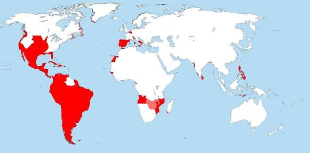
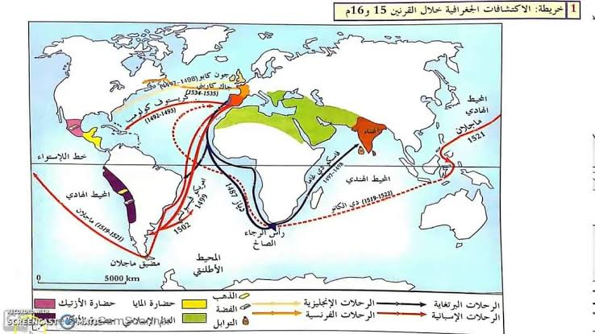

تمارين – الاكتشافات الجغرافية الكبرى ونتائجها
- الكرفال (Caravelle):
- سفينة جديدة بناها البرتغاليون منذ أواسط القرن XV، متوسّطة الطول ذات جوانب عالية، حمولتها لا تزيد على 100 طن، سهلة القيادة والمناورة في أعالي البحار بفضل أشرعتها المثلثة والمربّعة الموزّعة على عدّة صواري (إلى غاية 4 صواري).
- المرشدات البحرية (Portulan):
- خرائط جديدة تتطوّر مع كلّ رحلة، استدلّ بها الملّاحون لمعرفة الطرقات بفضل ما توفّره من معلومات حول السواحل والجزر والموانئ.
- معاهدة تورديسياس (1494):
- معاهدة قسّمت بين الإمبراطوريتين الإسبانية والبرتغالية المناطق المكتشفة والتي ستُكتشف لاحقًا. وضعت خط الفصل على مسافة 370 وحدة غرب الرأس الأخضر (نحو 1,660 كلم، خط الطول 46°35' غربًا)، وكانت بذلك أوّل اقتسام للعالم آنذاك. صادق عليها البابا Jules II سنة 1506 قبل أن تُعوّض باتفاقية سنة 1750.
- الاقتصاد-العالم (Économie-Monde):
- النظام العالمي الذي تشكّلت ملامحه الأولى بعد الاكتشافات الجغرافية، حيث عمل الأوروبيون على تعزيز حضورهم خارج القارة وإخضاع المجال العربي الإسلامي والآسيوي للهيمنة الاقتصادية والتجارية الأوروبية، بينما مثّلت إفريقيا خزّانًا ديموغرافيًا اُستعبد سكّانه.
| المنطقة | نسبة التراجع السكاني (%) |
|---|---|
| المكسيك | 66.7 |
| جزر الكراييب | 60 |
| أمريكا اللاتينية | 50 |
| أمريكا الشمالية | 28 |
المصدر: معطيات الدرس حول التراجع السكاني في الأمريكيتين خلال القرن XVI


تمثّل الخريطة أهم الرحلات الاستكشافية الكبرى: الرحلات البرتغالية: اكتشاف السواحل الغربية لإفريقيا في عهد هنري الملاح، ثمّ بلوغ برتلمي دياز رأس الرجاء الصالح سنة 1488، وبلوغ فاسكو دي غاما ميناء كلكوتا بالهند سنة 1498. الرحلات الإسبانية: قاد كريستوف كولومب أربع رحلات بين 1492 و1504 بلغ خلالها جزر الباهاماس وكوبا وهيسبانيولا. وحاول ماجلان بلوغ الهند من الغرب (1519-1522) فاكتشف مضيق ماجلان والمحيط الباسيفيكي، وأتمّ رفاقه بقيادة إلكانو أوّل دورة حول العالم. الرحلات الأخرى: جون كابوت (1497-1498)، جسبار وميغال كورت ريال (1500-1502)، مارتن فروبيشار وجون دايفيس. النتائج: وضع صورة أكثر دقّة واكتمالًا للعالم، تكوين الإمبراطوريات الاستعمارية، دعم قوّة أوروبا الغربية، وبروز موانئ الواجهة الأطلسية.
- مقدمة: تحديد الاكتشافات الجغرافية كتحوّل هام في تاريخ الإنسانية.
- تطوير: أولاً. وضع صورة أكثر دقّة للعالم؛ ثانياً. تكوين الإمبراطوريات الاستعمارية؛ ثالثاً. دعم قوّة أوروبا الغربية؛ رابعاً. بروز موانئ الواجهة الأطلسية.
- خاتمة: الاكتشافات الجغرافية إيذانًا ببداية العصر الحديث.
مقدمة
تُعدّ الاكتشافات الجغرافية الكبرى تحوّلًا هامًّا في تاريخ الإنسانية، إذ فتحت الطريق أمام الأوروبيين لاكتشاف أراضٍ جديدة وطرقٍ لم تكن معروفة من قبل، فانتقل مركز ثقل الملاحة البحرية من البحر المتوسّط إلى المحيط الأطلسي.
تطوير
أولاً. وضع صورة أكثر دقّة واكتمالًا للعالم
أعاد الأوروبيون النظر في تصوّراتهم التقليدية للعالم والإنسان. فقد أثبتت الرحلات لهم الشكل الكروي للأرض (بعد أوّل دورة حول العالم 1519-1522)، وأطلعتهم على العديد من الشعوب والحضارات مثل الحضارات الأمريكية قبل الكولومبية: الإنكا والأزتاك والمايا.
ثانياً. تكوين الإمبراطوريات الاستعمارية
نشأ تنافس استعماري بين الإمبراطوريتين الإسبانية والبرتغالية، وتوّج ذلك بمعاهدة تورديسياس 1494 التي كانت أوّل اقتسام للعالم آنذاك. وقد انتهج الإسبان سياسة استعمارية توطينية متشدّدة أدّت إلى إبادة أعداد كبيرة من السكّان الأصليين (تراجع سكّان أمريكا اللاتينية بمقدار النصف بين 1500 و1600)، ولتعويض نقص العمالة استُجلب 9.391 مليون عبد إفريقي بين 1500 و1870.
ثالثاً. دعم قوّة أوروبا الغربية ومكانتها العالمية
ساهم تدفّق ثروات المستعمرات في تنشيط الدورة الاقتصادية بدول أوروبا الغربية، وتضاعف ناتجها الداخلي الخام من 44.162 مليار دولار سنة 1500 إلى 81.302 مليار دولار سنة 1700. وتقوّضت الهياكل التقليدية للاقتصاد الأوروبي لصالح الأرباح التجارية فنشأت الماركانتيلية وبرزت البرجوازية التجارية.
رابعاً. بروز موانئ الواجهة الأطلسية
عادت المبادرة إلى الدول الأوروبية المطلّة على الأطلسي، فتحوّلت لشبونة وإشبيلية وأمستردام ولندن إلى مخازن أساسية في إعادة توزيع منتوجات المستعمرات، بينما تقلّص دور المدن-الدول الإيطالية (البندقية وجنوة) وتلاشى دور الوساطة الذي لعبه التجّار العرب.
خاتمة
هكذا كانت الاكتشافات الجغرافية الكبرى إيذانًا ببداية العصر الحديث، إذ أعادت تشكيل خريطة العالم السياسية والاقتصادية ودفعت أوروبا في مقدّمة المشهد العالمي.